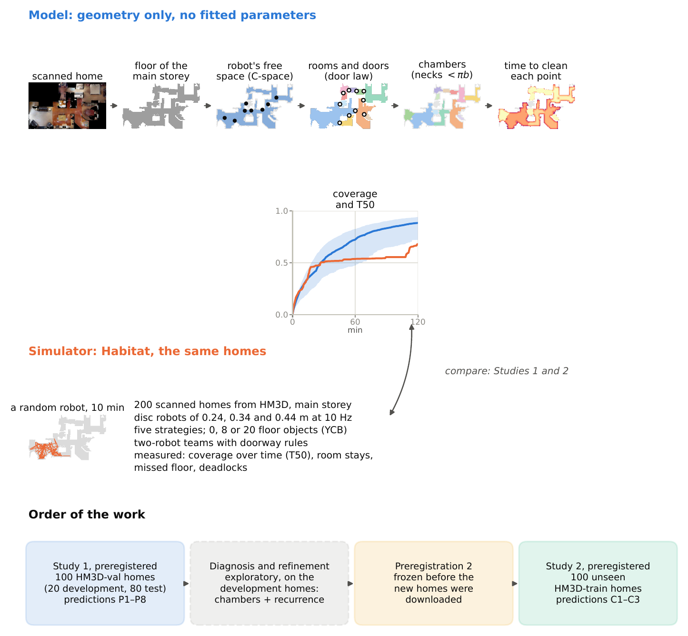

Doorways set the pace of robot vacuum cleaning: a parameter-free room-graph model, tested and confirmed in 200 real homes
Robotics and Autonomous Systems (Elsevier)

Abstract
How long a randomly moving robot vacuum takes to clean a home, and where two robots in the same home obstruct each other, cannot yet be predicted from the floor plan. We argue that the doorways govern both. A room-graph model with no fitted parameters turns the geometry of a home into a Markov chain over rooms, with exit rates from a billiard door law and per-point cleaning rates from Crofton's formula. We tested it in HomeClean-200, a simulation benchmark of 200 scanned HM3D homes with floor clutter, five cleaning strategies and two-robot teams (17,580 runs). In a preregistered first study on 100 homes the door law held (slope 0.86) and the model ranked homes well (r = 0.84), but it predicted cleaning 26% faster than simulated (R² = 0.54); 3 of eight predictions held. An exploratory diagnosis traced the gap to an independence assumption: furniture and clutter make the robot's visits to a spot come in bursts. Two corrections from the same billiard picture, free-space chambers and two-dimensional recurrence, removed most of the gap. A second preregistration, frozen before 100 unseen homes were downloaded, confirmed the refined model (R² = 0.81, near the ceiling of 0.84 set by run-to-run variation), replicated the door law, and showed that a vacuum and a delivery robot jam at the doors most used by delivery routes (rank percentile 0.66). The model describes robots that bounce; for Roomba-like robots it ranks homes but misjudges absolute times. All results come from simulation.
Under review. The full manuscript is available on request: sayeb.cse@gmail.com.
Video
Cite
@article{rayhan2026doorways,
title = {Doorways set the pace of robot vacuum cleaning: a parameter-free room-graph model, tested and confirmed in 200 real homes},
author = {Rayhan, Md Abu Sayeb and Hiya, Hustagna and Dhar, Ajoy Shutra},
journal = {Robotics and Autonomous Systems (Elsevier)},
note = {Under review},
year = {2026}
}